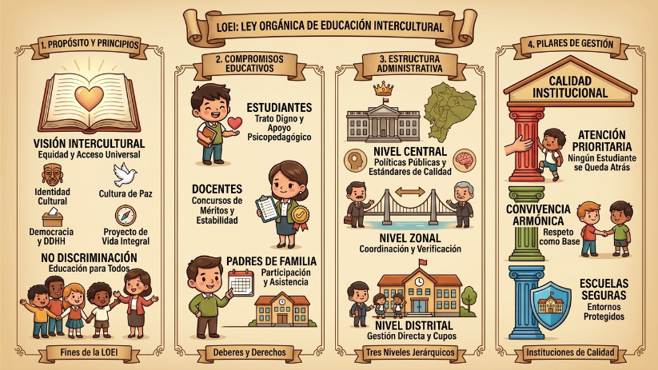

La LOEI es básicamente el motor que hace que todo el sistema educativo funcione en nuestro país. Su objeto es claro: normar todo el proceso con una visión intercultural, y lo mejor es que su alcance es total, rigiendo para todo el territorio nacional (Art. 1 y 2). Lo que más me llamó la atención al revisar sus principios es que todo gira en torno al acceso universal, la no discriminación y la equidad. No importa de dónde vengas, el sistema está diseñado para dar las mismas oportunidades.

¿Qué busca la educación?
La ley no solo quiere que aprendamos datos. Sus fines (Art. 9) son mucho más profundos: buscan que preservemos nuestra identidad cultural, desarrollemos nuestra personalidad al máximo y, sobre todo, que la práctica de los derechos humanos sea parte de nuestro día a día. De hecho, me parece genial que la ley reconozca el concepto de Proyecto de Vida Integral (Art. 11), que es básicamente ese plan personal que todos construimos sobre lo que queremos llegar a ser en el futuro.
Derechos y obligaciones: Un compromiso de todos
El sistema solo funciona si todos cumplimos nuestra parte. Como estudiantes, tenemos derecho a ser tratados con dignidad, a la privacidad y a recibir apoyo psicológico si lo necesitamos; pero a cambio, debemos ser responsables con nuestras tareas, buscar la excelencia y tratar con respeto a toda la comunidad educativa.
Por el lado de los docentes, ellos también tienen sus garantías (como participar en concursos de méritos o sus merecidos 30 días de vacaciones) y sus deberes, que van desde cumplir la jornada completa hasta tener todo listo en su planificación académica. Incluso los padres tienen un rol clave: participar en la evaluación de los profesores y asegurarse de que sus hijos no falten a clase.
¿Cómo se organiza el sistema?
La parte administrativa a veces parece un laberinto, pero la LOEI lo divide en tres niveles (Art. 38):
Nivel Central (Art. 39): Es el cerebro, donde se formulan las políticas y estándares nacionales. Le corresponde al Ministro/a del ramo.
Nivel Zonal (Art. 42): Es el puente; coordina y controla que lo que dice el nivel central se cumpla en los distritos.
Nivel Distrital (Art. 43): Es el nivel operativo, el que asegura que haya cupos y cobertura educativa en cada territorio.